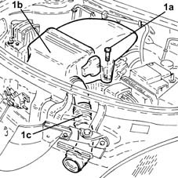
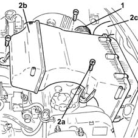
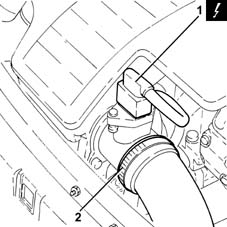
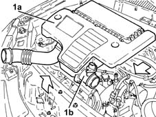
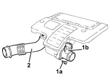

Procedures › 10 ENGINE › 1048 ENGINE AIR SUPPLY CIRCUIT › 1048A vacuum air circuit › 1048A10 air cleaner filtering element - replace 1048A10 air cleaner filtering element - replace
Path Procedures > 10 ENGINE > 1048 ENGINE AIR SUPPLY CIRCUIT > 1048A vacuum air circuit > 1048A10 air cleaner filtering element - replace
Kind repair procedure (removal / refitting; the operation number is the code)
Applies to all engines; all production periods
Interactive page https://sloeber94.github.io/elrnDB-lYpsln/en/#/2428915
Applies to: engines: 1.2 8v; all production periods
1. Undo the bolts (1a) and remove the air filter (1b) complete with
cold air intake (1c).

Applies to: engines: 1.2 16v; all production periods
1. Loosen the band and disconnect the sleeve from air cleaner to
intake manifold, air filter side.
2. Undo the bolts (2a) and remove the air filter (2b) complete with
cold intake (2c).

Applies to: engines: 1.4 16v; all production periods
1. Loosen the band and disconnect the sleeve from air cleaner to
intake manifold, air filter side
2. Undo the bolts (2a) and remove the air filter (2b) complete with
cold intake (2c).
Applies to: engines: 1.3 JTD; all production periods
Ensure that the ignition key is in OFF
position, then disconnect the battery negative terminal (-).
Name
Connector
-
Battery
A1B
1. Disconnect the electrical connection from the air flow meter.
Name
Connector
1
Air flow meter
K41
2. Loosen the band and disconnect the the turbocharger air inlet
sleeve from the rigid pipe, air flow meter side.

Applies to: engines: 1.2 8v; all production periods
Refit the air intake with cold air intake
with and secure it using the bolts.
Applies to: engines: 1.2 16v; all production periods
Refit the air filter with cold air intake
in its housing and secure it using the bolts.
Connect the hose from the air filter, air
filter side and tighten the band.
Applies to: engines: 1.4 16v; all production periods
Refit the air filter with cold air intake
in its housing and secure it using the bolts.
Connect the hose from the air filter, air
filter side and tighten the band.
Applies to: engines: 1.3 JTD; all production periods
1. Remove the air filter (1a) complete with air flow meter (1b)
by releasing it first from the lower pins and then from the rear
fastening.

Applies to: engines: 1.3 JTD; all production periods
1. Working at the bench, undo the bolts (1a) and remove the air
flow meter (1b) from the air filter.
2. Disconnect and remove the air filter cold air intake.

Applies to: engines: 1.3 JTD; all production periods
Place the air filter cold air intake in
its housing and connect it.
Place the air flow meter in its housing
on the air filter and secure it using the bolts.
Replace the air filter, complete with air
flow meter, in its housing.
Connect the air intake sleeve to the turbocharger,
air flow meter side, and tighten the band.
Connect the electrical connection to the
air flow meter.
Connect the negative (-) battery terminal.
Topics linked from this page (2)
Topics that link to this page (56) B13 ENGINE STARTS WITH DIFFICULTY' fault diagnosis table (symptom -> numbered test steps) · all engines; all production periods 0010T20 coolant change repair procedure (removal / refitting; the operation number is the code) · all engines; all production periods 0510A20 timing gear with belt drive - check - carry out operation with cam cover(s) removed and tappets adjusted repair procedure (removal / refitting; the operation number is the code) · engines: 1.2 8v, 1.2 16v, 1.4 16v; all production periods 0510A30 cam lift - check with cam cover(s) removed repair procedure (removal / refitting; the operation number is the code) · engines: 1.2 8v, 1.2 16v, 1.4 16v; all production periods 1004B10 power unit with manual gearbox - r + r repair procedure (removal / refitting; the operation number is the code) · all engines; all production periods 1016A20 single cam cover - r + r and replace gasket repair procedure (removal / refitting; the operation number is the code) · engines: 1.2 8v; all production periods 1016B10 single cylinder head extension - change gasket repair procedure (removal / refitting; the operation number is the code) · engines: 1.2 16v, 1.4 16v, 1.3 JTD; all production periods 1016C10 cylinder head - r + r and replace gasket repair procedure (removal / refitting; the operation number is the code) · all engines; all production periods 1020A20 crank case oil sump - r + r clean seals for sealant application repair procedure (removal / refitting; the operation number is the code) · all engines; all production periods 1020D14 front crank shaft oil seal cover - r + r and replace seals for versions with oil pump on crank shaft, timing side repair procedure (removal / refitting; the operation number is the code) · engines: 1.2 8v, 1.2 16v, 1.4 16v; all production periods 1020D18 front crank shaft cover oil seal - replace repair procedure (removal / refitting; the operation number is the code) · engines: 1.2 8v, 1.2 16v, 1.4 16v; all production periods 1020D26 flywheel side oil seal cover - r+r repair procedure (removal / refitting; the operation number is the code) · engines: 1.2 8v, 1.2 16v, 1.4 16v; all production periods 1024B10 engine flywheel - r + r for versions with manual gearbox repair procedure (removal / refitting; the operation number is the code) · engines: 1.2 8v, 1.3 JTD; all production periods 1028H20 piston with connecting rod - r r repair procedure (removal / refitting; the operation number is the code) · all engines; all production periods 1032B10 toothed timing belt - r + r for timing adjustment or replacement repair procedure (removal / refitting; the operation number is the code) · engines: 1.2 8v, 1.2 16v, 1.4 16v; all production periods 1032B46 toothed drive pulley - r + r repair procedure (removal / refitting; the operation number is the code) · all engines; all production periods 1032B52 toothed driven pulley (one) - r + r repair procedure (removal / refitting; the operation number is the code) · engines: 1.2 8v, 1.2 16v, 1.4 16v; all production periods 1032C18 mobile timing system tensioner - r + r for 24 valve engines repair procedure (removal / refitting; the operation number is the code) · engines: 1.2 8v, 1.2 16v, 1.4 16v; all production periods 1036B10 overhead camshaft - r r on vehicle repair procedure (removal / refitting; the operation number is the code) · engines: 1.2 8v; all production periods 1036B32 camshaft seal support with ignition coil r + r including seal replacement repair procedure (removal / refitting; the operation number is the code) · engines: 1.2 8v; all production periods 1036H14 valve tappets - check clearance repair procedure (removal / refitting; the operation number is the code) · engines: 1.2 8v; all production periods 1036L10 camshafts in cylinder head extension - r r - includes cylinder head extension replacement if necessary repair procedure (removal / refitting; the operation number is the code) · engines: 1.2 16v, 1.4 16v; all production periods 1036L20 camshaft idler gears - replace repair procedure (removal / refitting; the operation number is the code) · engines: 1.2 16v, 1.4 16v; all production periods 1036L30 front oil seal of intake camshaft in cylinder head extension replace repair procedure (removal / refitting; the operation number is the code) · engines: 1.2 16v, 1.4 16v; all production periods 1040B30 fuel delivery line - r r repair procedure (removal / refitting; the operation number is the code) · engines: 1.2 8v, 1.2 16v, 1.4 16v; all production periods 1056B14 throttle case - r + r repair procedure (removal / refitting; the operation number is the code) · engines: 1.2 8v; all production periods 1056B50 coolant temperature sensor - r + r repair procedure (removal / refitting; the operation number is the code) · engines: 1.2 8v, 1.2 16v, 1.4 16v; all production periods 1056B51 cam angle sensor r + r repair procedure (removal / refitting; the operation number is the code) · engines: 1.2 8v, 1.2 16v, 1.4 16v; all production periods 1056B60 single fuel manifold pipe, with injectors - r + r repair procedure (removal / refitting; the operation number is the code) · engines: 1.2 8v, 1.2 16v, 1.4 16v; all production periods 1056B82 injection/ignition system e.c.u. (one) - r + r repair procedure (removal / refitting; the operation number is the code) · engines: 1.2 8v, 1.2 16v, 1.4 16v; all production periods 1056B90 system cable bundle - r + r repair procedure (removal / refitting; the operation number is the code) · engines: 1.2 16v, 1.4 16v; all production periods 1068A10 accelerator pedal control - check, adjust if necessary and lubricate repair procedure (removal / refitting; the operation number is the code) · engines: 1.2 8v; all production periods 1068A14 accelerator pedal - r + r repair procedure (removal / refitting; the operation number is the code) · engines: 1.2 8v; all production periods 1068A30 accelerator control cable - r + r repair procedure (removal / refitting; the operation number is the code) · engines: 1.2 8v; all production periods 1072B10 inlet manifold - r + r and replace seal repair procedure (removal / refitting; the operation number is the code) · engines: 1.2 8v; all production periods 1072B50 sleeves connecting air capacity box to inlet manifold is - r+r repair procedure (removal / refitting; the operation number is the code) · engines: 1.2 16v, 1.4 16v, 1.3 JTD; all production periods 1072C16 exhaust manifold with catalytic converter - r r repair procedure (removal / refitting; the operation number is the code) · engines: 1.2 8v, 1.2 16v, 1.4 16v; all production periods 1072C44 exhaust manifold heat shield on bulkhead - r+r repair procedure (removal / refitting; the operation number is the code) · engines: 1.2 8v, 1.2 16v, 1.4 16v; all production periods 1080B94 front lambda probe with catalitic converter r r repair procedure (removal / refitting; the operation number is the code) · engines: 1.2 8v, 1.2 16v, 1.4 16v; all production periods 1080D24 engine oil vapour intake pipe - r + r repair procedure (removal / refitting; the operation number is the code) · engines: 1.2 8v, 1.2 16v, 1.4 16v; all production periods 1080D50 engine oil vapour recirculation flame trap - repl. repair procedure (removal / refitting; the operation number is the code) · engines: 1.2 16v, 1.4 16v; all production periods 1080E28 enablement solenoid for flow of fuel vapour to inlet - r+r repair procedure (removal / refitting; the operation number is the code) · engines: 1.2 8v, 1.2 16v, 1.4 16v; all production periods 1080E66 AIR INTAKE CHAMBER fuel vapour intake PIPE - R.R. repair procedure (removal / refitting; the operation number is the code) · engines: 1.2 8v; all production periods 1084B50 timing mount oil pipe - r r repair procedure (removal / refitting; the operation number is the code) · engines: 1.2 8v; all production periods 1088B20 engine cooling radiator - r + r repair procedure (removal / refitting; the operation number is the code) · all engines; all production periods 1088B32 engine cooling radiator support beam - r r repair procedure (removal / refitting; the operation number is the code) · engines: 1.2 8v, 1.2 16v, 1.4 16v; all production periods 1088C10 water pump - r + r repair procedure (removal / refitting; the operation number is the code) · all engines; all production periods 1088D24 rigid pipe for coolant inlet to water pump - r + r repair procedure (removal / refitting; the operation number is the code) · all engines; all production periods 1088E10 radiator cooling fan - r + r repair procedure (removal / refitting; the operation number is the code) · all engines; all production periods 1810A20 clutch - r + r repair procedure (removal / refitting; the operation number is the code) · all engines; all production periods 2110A10 manual gearbox and differential - r + r repair procedure (removal / refitting; the operation number is the code) · all engines; all production periods 2110A60 manual gearbox/engine coupling bracket - r+r repair procedure (removal / refitting; the operation number is the code) · engines: 1.2 8v, 1.2 16v, 1.3 JTD; all production periods 5040A57 evaporator inlet pipe - r r repair procedure (removal / refitting; the operation number is the code) · engines: 1.3 JTD; all production periods 5040A58 pipe from expansion valve to compressor - r+r repair procedure (removal / refitting; the operation number is the code) · all engines; all production periods 5510C14 ignition coil/s - r+r repair procedure (removal / refitting; the operation number is the code) · engines: 1.2 8v, 1.2 16v, 1.4 16v; all production periods 5510D10 spark plugs - r+r repair procedure (removal / refitting; the operation number is the code) · engines: 1.2 8v, 1.2 16v, 1.4 16v; all production periods
 Removing
Removing Refitting
Refitting